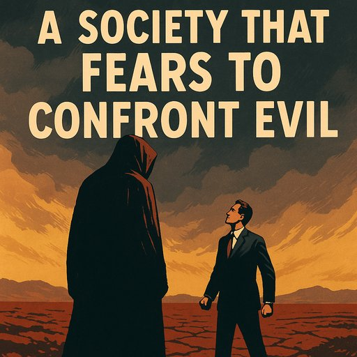

Publicado em 2025-06-21 21:35:17
Quando a cobardia se disfarça de neutralidade, a civilização adoece.
Vivemos um tempo estranho em Portugal. Um tempo em que o mal já não precisa de se esconder nas sombras — entra-nos pelas televisões adentro, adornado de explicações culturais, análises geopolíticas equidistantes e comentadores de semblante compungido. Um tempo em que se ouve falar mais da “civilização iraniana” do que das vítimas do regime iraniano. Um tempo em que o Hamas já não é um grupo terrorista, mas uma “força de resistência legítima”, nas palavras de quem deturpa a verdade com uma condescendência mortal.
A decadência de uma sociedade começa quando esta perde a capacidade de nomear o mal. E em muitos dos nossos debates públicos, o mal deixou de ser o inimigo — passou a ser um “caso complexo”. Esta inversão moral não é apenas perigosa. É sintoma de uma civilização adoecida, sem bússola, sem nervo e sem memória.
Portugal, país de gente boa e generosa, está a ser contaminado por uma elite opinativa que já não reconhece a diferença entre liberdade e tirania. Quando os crimes do Hamas são relativizados e o Irão é tratado como bastião cultural, mas Israel é condenado por se defender, então já não é a paz que se procura — é a rendição do juízo.
A ideia de que há sempre dois lados iguais é o álibi de quem tem medo de escolher. Mas o mal não é um “lado”. O mal é uma força de aniquilação, e precisa de ser enfrentado. Quem o desculpa com retórica académica, quem lhe dá espaço mediático em nome da “pluralidade”, contribui — consciente ou inconscientemente — para o avanço das trevas.
O silêncio cúmplice, a empatia seletiva e o cinismo doentio dos salões televisivos fazem lembrar as vésperas de outros desastres históricos. Já ouvimos isto antes: em nome da neutralidade, deixaram-se crescer monstros. E depois, como sempre, foi o sangue dos inocentes que pagou a fatura da cobardia dos prudentes.
Portugal não faz parte do eixo do mal. Mas se não acordarmos, se não soubermos dizer com firmeza o que é intolerável, se não defendermos os pilares da liberdade e da civilização ocidental, corremos o risco de nos tornarmos o elo fraco — e cúmplice — da sua queda.
Artigo de Francisco Gonçalves in Fragmentos de Caos